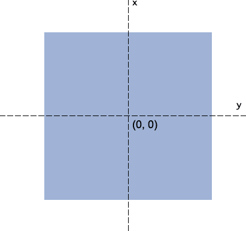
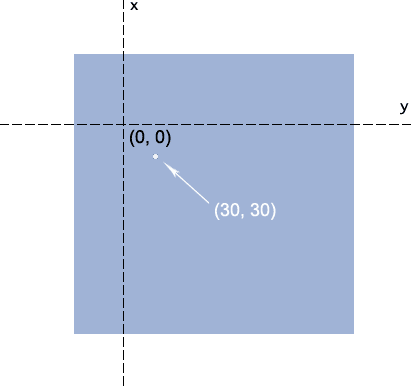
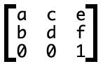
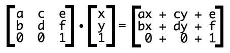

css3中的矩阵
CSS3中的矩阵指的是一个方法，书写为matrix()和matrix3d()，前者是元素2D平面的移动变换(transform)，后者则是3D变换。2D变换矩阵为3*3, 如上面矩阵示意图；3D变换则是4*4的矩阵。
transform属性
transform中有这么几个属性方法：斜拉(skew)，缩放(scale)，旋转(rotate)以及位移(translate).
其后面运作的机理是什么呢?
无论是旋转还是拉伸什么的，本质上都是应用的matrix()方法实现的（修改matrix()方法固定几个值）
注：我个人理解，在设置元素移动变换之后，实际上是修改了matrix()方法的值，通过对元素里的每个点的位置坐标与这个矩阵的计算获取移动变换之后的坐标值，重新渲染出移动变换之后的样子
transform与坐标系统
transform默认是绕着中心点旋转的，而这个中心点就是transform-origin属性对应的点，也是所有矩阵计算的一个重要依据点
注：这个中心点，是指作用的元素的中心点，也就是以元素的中心点作为坐标原点，这个要与页面的坐标原点区分开
当我们通过transform-origin属性进行设置的时候，矩阵相关计算也随之发生改变。反应到实际图形效果上就是，旋转拉伸的中心点变了！
举例，如果我们设置：
transform-origin: 50px 70px;
则，中心点位置有中间移到了距离左侧50像素，顶部70像素的地方（参见下图），而此时的(30, 30)的坐标为白点所示的位置.
matrix方法
CSS3 transform的matrix()方法写法如下：
transform: matrix(a,b,c,d,e,f); //定义 2D 转换，使用六个值的矩阵。
实际上，这6参数，对应的矩阵就是：
坐标发生变化，反应在这里就是如下转换公式：
其中，x, y表示转换元素的所有坐标（变量）了，ax+cy+e为变换后的水平坐标，bx+dy+f表示变换后的垂直位置。
matrix参数与translate/scale/skew/rotate函数参数的对应关
| translate(tx,ty) | matrix(1,0,0,1,tx,ty) |
| scale(sx,sy) | matrix(sx,0,0,sy,0,0) |
| skew(sx,sy) | matrix(1,tansy,tansx,1,0,0) |
| rotate(rx) | matrix(cosrx,sinrx,-sinrx,cosrx,0,0) |
例如旋转(rotate)：方法以及参数使用如下（假设角度为θ）：
matrix(cosθ,sinθ,-sinθ,cosθ,0,0)
结合矩阵公式，就有：
x' = x*cosθ-y*sinθ+0 = x*cosθ-y*sinθ
y' = x*sinθ+y*cosθ+0 = x*sinθ+y*cosθ
这个与IEMatrix滤镜中的旋转是有些类似的(M11表示矩阵第1行第1个（参数a），M21表示矩阵第2行第一个（参数b）……)：
filter:progid:DXImageTransform.Microsoft.Matrix(M11=cosθ,M21=sinθ,M12=-sinθ,M22=cosθ');
就旋转而言，rotate(θdeg)这种书写形式要比matrix简单多了，首先记忆简单，其次，无需计算。例如，旋转30°，前者直接：
transform:rotate(30deg);
而使用matrix表示则还要计算cos, sin值：
transform: matrix(0.866025,0.500000,-0.500000,0.866025,0,0);